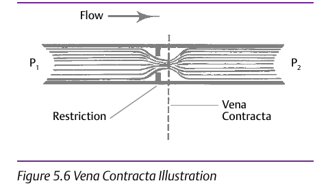

Where Both Failures Start

- 1Flow narrows through a restriction to a minimum area just downstream — the vena contracta — where pressure inside the valve is lowest, before recovering toward P2. This happens at the point of greatest restriction in every valve; what differs by design is how much pressure recovers afterward
- 2If that lowest pressure drops to or below the fluid's vapor pressure, the liquid flashes to vapor bubbles there
- 3If downstream pressure then recovers above vapor pressure, those bubbles collapse close to where they formed — releasing energy, producing a noise like gravel flowing through the valve, and tearing away material near solid surfaces. The collapse, not the flashing itself, is what erodes metal
Control Valve Handbook, 6th ed., §5.14.1 and Figure 5.6 “Vena Contracta Illustration,” p.128. Component Index: cvh-topic-vena-contracta, cvh-topic-cavitation, cvh-cmp-vena-contracta-diagram.